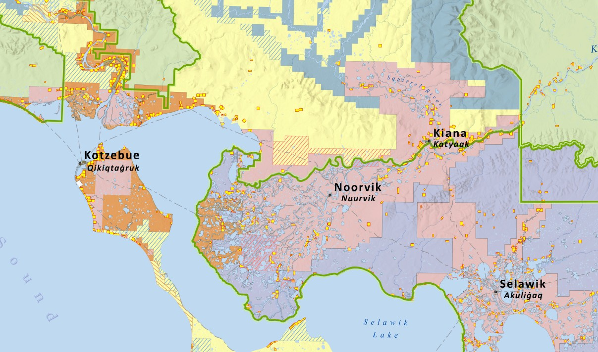

Module 2 – QGIS Desktop GIS
Developed foundational desktop GIS skills including data management, spatial analysis, and cartographic design using QGIS.
Tools: QGIS, GitHub
GIS Graduate Student
University of Arizona

GIST Master's Program – University of Arizona
I am a student at the University of Arizona enrolled in the Geographic Information Systems and Technology Master's Program, with an expected graduation of December 2027. I earned my Bachelor's degree in Geography/GIS from Arizona State University in 2009.
I currently work as a Land and GIS Manager for my native corporation, where I manage land access, monitor erosion, and research traditional Inupiaq place names and subsistence use areas. My work combines GIS analysis with cultural and environmental stewardship.
Developed foundational desktop GIS skills including data management, spatial analysis, and cartographic design using QGIS.
Tools: QGIS, GitHub
Performed geospatial analysis using Python in a containerized environment with pandas, GeoPandas, and Rasterio.
Tools: Python, GeoPandas, Rasterio, Docker
Built a spatial database using PostgreSQL/PostGIS and performed spatial analysis with SQL queries.
Tools: PostgreSQL, PostGIS, SQL, Docker
Analyzed OpenStreetMap data using PostGIS and Python workflows with spatial queries and visualization.
Tools: OSM, PostGIS, GeoPandas, SQL
Built an interactive web map using Leaflet with GeoJSON data, styling, and user interaction.
Tools: HTML, CSS, JavaScript, Leaflet
Feel free to connect with me or view more of my work: